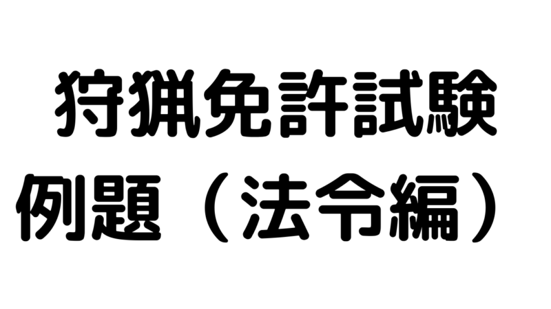

狩猟免許試験過去問題集〜法令編～
狩猟免許試験は、法令関連の問題が全30問中13問出題されます。言葉が難しかったり紛らわしいものもありますが、法令関連の出来が合否をわけますのでしっかり準備したいですね。
予備講習会で買える例題集はA4でちょっと見るのには大きいのでスマホで練習できるように問題を切り取ってみました。
2019年の例題集から抜粋していますので、法律が改訂されたりして答えが違う場合はご指摘いただけると幸いです。
練習問題
- 問）コジュケイ、ヤマシギ、スズガモ、ハシビロガモはすべて狩猟鳥獣に指定されている。〇か×か？
- 答）〇
- 問）カルガモ、ウミアイサ、ハシビロガモ、トモエガモはすべて狩猟鳥獣に指定されている。〇か×か？
- 答）×（ウミアイサ、トモエガモは非狩猟鳥獣）
- 問）ヒドリガモ、クロガモ、キンクロハジロ、ウミアイサはすべて狩猟鳥獣に指定されている。〇か×か？
- 答）×（ウミアイサは非狩猟鳥獣）
- 問）狩猟鳥獣は全部で何種類指定されているか？
- 答）48種（鳥類28、獣類20）
- 問）狩猟鳥獣は環境大臣及び都道府県知事により定められている。〇か×か？
- 答）×（環境大臣のみ）
- 問）狩猟鳥獣の種数は平成に入ってから一定であり、48種である。〇か×か？
- 答）×（必要に応じて見直される）
- 問）鳥獣の保護及び管理並びに狩猟の適正化に関する法律は、主に狩猟免許に関する制度について定めている。〇か×か？
- 答）×（鳥獣の保護及び管理に関する制度、狩猟制度等について定められている）
- 問）狩猟に関する仕組みは、自然環境保全法及び鳥獣保護管理法に規定されている。〇か×か？
- 答）×（狩猟は鳥獣法で規定）
- 問）狩猟に関する仕組みは、絶滅のおそれのある野生動物の種の保存に関する法律および鳥獣保護管理法に規定されている。〇か×か？
- 答）×（狩猟はは鳥獣法で規定）
- 問）狩猟に関する仕組みは、鳥獣保護管理法に規定されている。〇か×か？
- 答）〇
- 問）鳥獣の保護及び管理並びに狩猟の適正化に関する法律は、鳥獣保護管理事業計画、鳥獣保護区、鳥獣の捕獲許可及び狩猟免許・登録等に関する制度について定めている。〇か×か？
- 答）〇
- 問）鳥獣の保護及び管理並びに狩猟の適正化に関する法律は、猟銃の所持許可、火薬類の譲受・使用許可等に関する制度について定めている。〇か×か？
- 答）×（鳥獣の保護及び管理に関する制度、狩猟制度等について定められている）
- 問）鳥獣法は、生物の多様性の確保、生活環境の保全及び農林水産業の健全な発展に寄与することを目的としている。〇か×か？
- 答）〇
- 問）ツキノワグマ、イノシシ、ニホンザルはすべて狩猟鳥獣に指定されている。〇か×か？
- 答）×（ニホンザルは非狩猟鳥獣）
- 問）ヌートリア、キツネ、アナグマはすべて狩猟鳥獣に指定されている。〇か×か？
- 答）〇
- 問）タヌキ、シマリス、イタチ（メス）はすべて狩猟鳥獣に指定されている。〇か×か？
- 答）×（イタチ（メス）は非狩猟鳥獣）
- 問）鳥獣法は、狩猟を厳しく取り締まることにより、事故防止及び鳥獣の保護繁殖を図ることを目的としている。〇か×か？
- 答）×
- 問）鳥獣法は、野外レクレーションの一環として秩序ある狩猟を普及することにより、国民の健康の増進と自然との触れ合いを推進することを目的としている。〇か×か？
- 答）×
- 問）鳥獣法は、国では林野庁（農林水産省）、都道府県では農林水産行政担当部局が担当している。
- 答）×（国：環境省、都道府県：自然環境・農林水産担当部局）
- 問）鳥獣法は、国では文化庁、都道府県では教育委員会が担当している。
- 答）×（国：環境省、都道府県：自然環境・農林水産担当部局）
- 問）鳥獣法は、国では環境省、都道府県では自然環境行政または農林水産行政担当部局が担当している。
- 答）〇
- 問）ヤマシギは狩猟鳥獣である。〇か×か？
- 答）〇
- 問）ウミアイサは狩猟鳥獣である。〇か×か？
- 答）×
- 問）スズガモは狩猟鳥獣である。〇か×か？
- 答）〇
- 問）ハシビロガモは狩猟鳥獣である。〇か×か？
- 答）〇
- 問）カルガモは狩猟鳥獣である。〇か×か？
- 答）〇
- 問）トモエガモは狩猟鳥獣である。〇か×か？
- 答）×
- 問）ツキノワグマは狩猟鳥獣である。〇か×か？
- 答）〇
- 問）ニホンザルは狩猟鳥獣である。〇か×か？
- 答）×
- 問）狩猟鳥獣に指定されている鳥類は、狩猟によりひなや卵も捕獲することができる。〇か×か？
- 答）×
- 問）狩猟鳥獣に指定されている鳥類はのひなや卵は狩猟により捕獲することが出来るが、生息数が少なくなっている狩猟鳥のひなや卵については、一時的に捕獲を禁止することができる。
- 答）×
- 問）狩猟鳥獣の指定及び狩猟鳥獣の一時的な捕獲禁止規則は、いずれも環境大臣が都道府県知事と協議して実施する。〇か×か？
- 答）×（狩猟鳥獣の指定は環境大臣）
- 問）第一種重量免許を取得している者が使用できる銃器は、散弾銃、ライフル銃、および拳銃である。〇か×か？
- 答）×（散弾銃、ライフル銃、空気銃）
- 問）わな猟免許を取得している者が使用できる猟具は、環境大臣が定めた網及びわなである。〇か×か？
- 答）×（わな猟免許はわなのみ使用可）
- 問）わな猟免許を取得している者が使用できるわなは、くくりわな、はこわな、はこおとし、とらばさみである。〇か×か？
- 答）×（とらばさみは禁止猟法）
- 問）わな猟免許を取得している者が使用できるわなは、くくりわな、はこわな、囲いわな、おしである。〇か×か？
- 答）×（おしは禁止猟法）
- 問）網猟免許を取得している者が使用できる網は、むそう網、はり網、つき網、なげ網である。〇か×か？
- 答）〇
- 問）狩猟に使用できる猟法は、狩猟免許の種類に応じて決められているものが基本である。しかし、一部の猟法については、鳥獣の保護繁殖等を図るために使用が禁止されている。〇か×か？
- 答）〇
- 問）狩猟免許の有効範囲は、全国である。〇か×か？
- 答）〇
- 問）狩猟免許の有効範囲は、免許を受けた都道府県に限定される。〇か×か？
- 答）×
- 問）狩猟免許の有効範囲は、免許を受けた都道府県とその隣接都道府県に限定される。〇か×か？
- 答）×
- 問）ニュウナイスズメ、キジバト、ゴイサギ、ドバト、ヒドリガモはすべて狩猟鳥獣に指定されている。〇か×か？
- 答）×（ドバトは非狩猟鳥獣）
- 問）スズガモ、ビロウドキンクロ、ミヤマガラス、カケス、カワウはすべて狩猟鳥獣に指定されている。〇か×か？
- 答）×（ビロウドキンクロ、カケスは非狩猟鳥獣）
- 問）バン、タシギ、ホシハジロ、キンクロハジロ、クロガモはすべて狩猟鳥獣に指定されている。〇か×か？
- 答）〇
- 問）狩猟免許の有効期限について、当初は約3年間であり、更新後は5年間である。〇か×か？
- 答）×
- 問）狩猟免許の有効期限について、当初は約5年間であり、更新後は1年間である。〇か×か？
- 答）×
- 問）狩猟免許の有効期限について、当初は約3年間であり、更新後は3年間である。〇か×か？
- 答）〇
- 問）狩猟免許の有効期限の最終日は誕生日の1か月前の日である。〇か×か？
- 答）×
- 問）狩猟免許の有効期限の最終日は、9月14日である。〇か×か？
- 答）〇
- 問）狩猟免許の有効期限の最終日は、北海道は9月14日、北海道以外の地域は10月14日である。〇か×か？
- 答）×
- 問）第一種狩猟免許は何歳から取得可能か？
- 答）20歳
- 問）網猟免許は何歳から取得可能か？
- 答）18歳
- 問）わな猟免許は何歳から取得可能か？
- 答）18歳
- 問）狩猟免許は有効期限内であればいつでも自由に更新手続きを行うことが出来る。〇か×か？
- 答）×
- 問）狩猟免許は事前に更新申請書を都道府県知事に提出し、適性検査に合格した場合に更新できる。〇か×か？
- 答）〇
- 問）災害などやむを得ない事情で更新手続きが出来なかった場合、その事情がなくなった日から何か月以内に手続きを行えば更新できるか？
- 答）1か月以内
- 問）鳥獣法に違反した場合は、違反の度合いにかかわらず狩猟免許が取り消される。〇か×か？
- 答）×（軽微な違反の場合は取り消されないことがある）
- 問）狩猟免許を取り消された者は、その後何年間試験を受けることができないか？
- 答）３年間
- 問）狩猟免許を受けた者が手足が不自由になっても鳥獣法に違反しなければ、免許の取り消しまたは効力が停止されることはない。〇か×か？
- 答）×
- 問）狩猟を行うときには狩猟免状を常に携帯しなければならない。〇か×か？
- 答）×（免状の携帯は不要）
- 問）狩猟を行うときには、狩猟者登録証を携帯し狩猟者記章を付けなければならないが、狩猟免状を携帯する必要はない。〇か×か？
- 答）〇
- 問）狩猟免状は、狩猟免許試験の合格通知であり、狩猟者登録や狩猟免許の更新の使用する必要はなく、狩猟者登録証を持参すればよい。〇か×か？
- 答）×（免状は登録や更新時に必要）
- 問）住所または氏名に変更があったときは、狩猟免許の更新を行うときに変更手続きをしなければならない。〇か×か？
- 答）×（住所または氏名の変更は遅滞なく新住所地の知事に届け出が必要）
- 問）都道府県を異にする住所の変更があったときは、新住所の都道日県知事に対して、遅滞なく届け出をしなければならない。
- 答）〇
- 問）狩猟免許を受けた者は全国のどこの都道府県でも狩猟を行うことが出来るが、狩猟をした後に、当該都道府県知事に対して狩猟報告を添付して狩猟者登録を行わなければならない。〇か×か？
- 答）×（狩猟をする前に登録が必要）
- 問）狩猟免許を受けた者は、住所地の都道府県知事に事前に狩猟者登録を行えば、全国どこの都道府県でも狩猟を行うことが出来る。〇か×か？
- 答）×（狩猟を行う都道府県ごとに登録が必要）
- 問）狩猟免許登録を受ける都道府県知事は、鳥獣の保護繁殖等を図るために、各都道府県における狩猟者の数等を制限することが出来る。〇か×か？
- 答）〇
- 問）狩猟者登録は、有効な狩猟免許を所持しており、かつ狩猟事故に伴う損害賠償（3千万円以上）のための保険に入っている場合に受けることが出来る。〇か×か？
- 答）〇
- 問）タイワンリス、イノシシ、ムササビ、テン、モモンガはすべて狩猟鳥獣に指定されている。〇か×か？
- 答）×（ムササビ、モモンガは非狩猟鳥獣）
- 問）シマリス、キツネ、タヌキ、アナグマ、イタチ（オス）はすべて狩猟鳥獣に指定されている。〇か×か？
- 答）〇
- 問）ヌートリア、オコジョ、ノウサギ、ツキノワグマ、ニホンリスはすべて狩猟鳥獣に指定されている。〇か×か？
- 答）×（オコジョ、ニホンリスは非狩猟鳥獣）
- 問）違反などにより狩猟免許の効力の停止を受けているときでも、経験年数10年以上の狩猟者と必ず一緒に行くことを条件として狩猟者登録を受けることができる。〇か×か？
- 答）×
- 問）鳥獣法に違反し、罰金刑以上の刑に処せられた同居親族をもつ者は、狩猟者登録を受けることができない。〇か×か？
- 答）×
- 問）狩猟者登録の期間は、10月15日から翌年4月15日まで（北海道は9月15日から翌年4月15日まで）。〇か×か？
- 答）〇
- 問）狩猟者登録の期間は、11月15日から翌年2月15日まで（北海道は10月1日から翌年1月31日まで）。〇か×か？
- 答）×
- 問）狩猟者登録の期間は、全国統一で10月1日から翌年3月31日まで。〇か×か？
- 答）×
- 問）第一種銃猟免許所持者は、空気銃のみを狩猟に使用する場合であっても、第一種銃猟の銃猟者登録を受けなければならない。〇か×か？
- 答）×
- 問）第一種銃猟免許取得者は、使用する猟具の種類として空気銃を選択した第一種銃猟の狩猟者登録を受けた場合は、空気銃を狩猟に使用することができる。〇か×か？
- 答）〇
- 問）第一種銃猟免許は、装薬銃を使用して狩猟を行うものに与えれられるもので、空気銃を対象とした第二種銃猟の狩猟者登録を受けることはできない。〇か×か？
- 答）×
- 問）都道府県の区域全部について登録すれば、その都道府県内の放鳥獣猟区の区域についても登録は有効である。〇か×か？
- 答）〇
- 問）都道府県の区域のうち放鳥獣猟区の区域について登録すれば、その都道府県の区域の全部についても登録は有効である。〇か×か？
- 答）×（放鳥獣猟区のみ有効）
- 問）都道府県の境界付近で隣接する都道府県のの区域にまたがって狩猟を使用とする場合、登録申請書にその都道府県名を記入したうえで主たるっ区域を管轄する都道府県知事の登録を受ければよい。〇か×か？
- 答）×（各都道府県の登録が必要）
- 問）放鳥獣猟区のみ、都道府県全域の2通りのうち、狩猟をしたい場所を選んで登録することができる。〇か×か？
- 答）〇
- 問）猟区（放鳥獣猟区を除く）のみ、放鳥獣猟区のみ、都道府県全域の3通りのうち、狩猟をしたい場所を得rんで登録することが出来る。〇か×か？
- 答）×（県全域、放鳥獣猟区のみの2通りの登録を選択できる）
- 問）猟区（放鳥獣猟区を含む）のみ、都道府県全域の2通りのうち、狩猟をしたい場所を選んで登録することができる。〇か×か？
- 答）×（猟区のみの登録はできない）
- 問）狩猟者登録証の携帯義務はあるが、だれにも提示する義務はない。〇か×か？
- 答）×（警察官、国又は都道府県の担当職員、鳥獣保護管理員、狩猟を使用としている土地の所有者に求められたら、提示しなければならない）
- 問）狩猟者登録証は、警察官、国又は都道府県の担当職員、鳥獣保護管理員、狩猟を使用としている土地の所有者に求められたら、提示しなければならない。〇か×か？
- 答）〇
- 問）狩猟者登録証は、狩猟をしようとしている土地の所有者から提示をもとめれらたときは、提示することが望ましいが、提示する義務はない。〇か×か？
- 答）×（警察官、国又は都道府県の担当職員、鳥獣保護管理員、狩猟を使用としている土地の所有者に求められたら、提示しなければならない）
- 問）狩猟者登録証及び狩猟者記章は、義務ではないができるだけ携帯・着用することが望ましい。〇か×か？
- 答）×（登録証及び記章は、携帯・着用が義務）
- 問）狩猟者登録証及び狩猟者記章は、必ず携帯・着用しなければならない。〇か×か？
- 答）〇
- 問）狩猟者登録証は携帯しなくてもよいが、狩猟者記章は必ず携帯しなければならない。〇か×か？
- 答）×（登録証及び記章は、携帯・着用が義務）
- 問）狩猟者登録証の住所または氏名に変更があったときは、狩猟免許と異なり、変更手続きを行う必要はない。〇か×か？
- 答）×（遅滞なく登録を受けた知事に届出が必要）
- 問）狩猟者登録証の住所または氏名に変更があったときは、遅滞なく登録を受けた都道府県知事に対して届け出をしなければならない。〇か×か？
- 答）〇
- 問）狩猟者登録証の住所または氏名に変更があったときは、1か月以内に狩猟免許を受けた都道府県知事に対して届け出をしなければならない。〇か×か？
- 答）×（遅滞なく登録を受けた知事に届出が必要）
- 問）狩猟免許が取り消されても、その理由によっては狩猟者登録が抹消されない場合がある。〇か×か？
- 答）×（免許が取り消されたら登録も抹消される）
- 問）狩猟免許が取り消されても、すでに受けた狩猟者登録は有効であり、狩猟を続けて行うことができる。〇か×か？
- 答）×（免許が取り消されたら登録も抹消される）
- 問）狩猟免許が取り消されたときは、狩猟者登録も抹消される。〇か×か？
- 答）〇
- 問）狩猟者登録を行わないで狩猟を行っても、狩猟免許の取り消しを受けることはない。〇か×か？
- 答）×（無登録狩猟などは免許取り消しにつながる重大な法律違反）
- 問）狩猟免許を受けている者であっても、狩猟者登録を受けていない場合は、狩猟を行うことができない。〇か×か？
- 答）〇
- 問）自分の狩猟者登録証を他人に貸しても、自分は罰を受けることはない。〇か×か？
- 答）×
- 問）狩猟者登録証は、登録期間の満了後、何日以内に都道府県知事に返納しなければならか？
- 答）30日以内
- 問）狩猟者登録証は、登録機関の満了後3ヵ月以内に都道府県知事に返納しなければならない。〇か×か？
- 答）×（30日以内に知事に返納しなければならない）
- 問）狩猟者登録証は、都道府県知事に速やかに返納する必要があるが、その期限については特段の定めはない。〇か×か？
- 答）×（登録機関満了後30日以内に知事に返納しなければならない）
- 問）狩猟者登録証の返納時に捕獲報告が必要な内容は？
- 答）種類・場所・頭羽数
- 問）狩猟者登録証の返納時には、狩猟期間中に出会った鳥獣の種類・頭羽数を報告する。〇か×か？
- 答）×（種類・場所・頭羽数を報告する）
- 問）狩猟者登録証の返納時には、狩猟期間中に捕獲した場所と延日数を報告する。〇か×か？
- 答）×（種類・場所・頭羽数を報告する）
- 問）ゴイサギ、マガモ、カルガモ、コガモ、ヨシガモはすべて狩猟鳥獣に指定されている。〇か×か？
- 答）〇
- 問）ツキノワグマ、ヒグマ、タヌキ、キツネ、モモンガはすべて狩猟鳥獣に指定されている。〇か×か？
- 答）×（モモンガは非狩猟鳥獣）
- 問）クロガモ、キンクロハジロ、バン、ヤマシギ、キジバトはすべて狩猟鳥獣に指定されている。〇か×か？
- 答）〇
- 問）環境大臣が定めたカモ類の狩猟期間（猟区（放鳥獣猟区を含む）以外の区域）は、11月15日から翌年の2月15日まで（青森・秋田・山形の3県は11月1日から翌年1月31日まで、北海道は10月1日から翌年1月31日まで）。〇か×か？
- 答）〇
- 問）環境大臣が定めたカモ類の狩猟期間（猟区（放鳥獣猟区を含む）以外の区域）は、11月15日から翌年の2月15日まで（北海道は11月1日から1月31日まで）。〇か×か？
- 答）×
- 問）環境大臣が定めたカモ類の狩猟期間（猟区（放鳥獣猟区を含む）以外の区域）は、12月1日から翌年1月31日まで（北海道及び青森・秋田・山形の3県は11月15日から翌年1月15日まで）。〇か×か？
- 答）×
- 問）環境大臣が定めた鳥獣（一部地域のカモ類を除く）の狩猟期間（猟区（放鳥獣猟区を含む）以外の区域）は、10月15日から翌年4月15日まで（北海道は9月15日から翌年4月15日まで）。〇か×か？
- 答）×
- 問）環境大臣が定めた鳥獣（一部地域のカモ類を除く）の狩猟期間（猟区（放鳥獣猟区を含む）以外の区域）は、11月15日から翌年2月15日まで（北海道は10月1日から1月31日まで）。〇か×か？
- 答）〇
- 問）環境大臣が定めた鳥獣（一部地域のカモ類を除く）の狩猟期間（猟区（放鳥獣猟区を含む）以外の区域）は、12月1日から翌年1月31日まで（北海道は11月15日から翌年1月15日まで）。〇か×か？
- 答）×
- 問）環境大臣が定めた猟区（放鳥獣猟区を含む）の狩猟期間は、11月15日から翌年の2月15日まで（北海道は10月1日から翌年1月31日まで）。〇か×か？
- 答）×
- 問）環境大臣が定めた猟区（放鳥獣猟区を含む）の狩猟期間は、10月15日から翌年の3月15日まで（北海道は9月15日から翌年2月末日まで）。〇か×か？
- 答）〇
- 問）環境大臣が定めた猟区（放鳥獣猟区を含む）の狩猟期間は、12月1日から翌年の１月３1日まで（北海道は11月15日から翌年2月15日まで）。〇か×か？
- 答）×
- 問）猟区（放鳥獣猟区を含む）の狩猟期間は、それ以外の区域に較べて始期及び終期が半月～1か月早められている。〇か×か？
- 答）×（猟区は始期が北海道では半月、北海道以外では1か月早いが、終期は1か月遅い）
- 問）北海道の一般猟場の狩猟期間は、北海道以外の区域の一般猟場の狩猟期間に比べて始期が1か月早く、終期が1か月遅くなっている。〇か×か？
- 答）（始期が1か月半早く、終期が15日早い）
- 問）狩猟期間は、鳥獣の生息動向に応じて、狩猟鳥獣の種類や場所を定めて、延長または短縮されることがある。〇か×か？
- 答）〇
- 問）ヤマドリは1日当たり何羽捕獲できるか？
- 答）２羽
- 問）コジュケイは１日何羽捕獲できるか？
- 答）５羽
- 問）キジバトは１日何羽捕獲できるか？
- 答）１０羽
- 問）キジは１日何羽捕獲できるか？
- 答）２羽
- 問）ヤマドリ、キジは１日当たり合計して５羽捕獲できる。〇か×か？
- 答）×（ヤマドリ、キジは合計２羽）
- 問）ニホンジカは１日当たり何頭捕獲できるか？
- 答）制限なし
- 問）エゾライチョウは１日当たり何羽捕獲できるか？
- 答）２羽
- 問）バンは１日当たり何羽捕獲できるか？
- 答）３羽
- 問）イノシシは１日当たり何頭捕獲できるか？
- 答）制限なし
- 問）ヤマシギ及びタシギは１日当たり合計５羽捕獲できる。〇か×か？
- 答）〇
- 問）バンは１日当たり５羽捕獲できる。〇か×か？
- 答）×（バンは１日３羽まで）
- 問）猟区（放鳥獣猟区を含む）の区域については、１日当たりの捕獲数の制限がない。〇か×か？
- 答）×（各猟区の規定で制限がある）
- 問）狩猟鳥獣は、どの種類についても捕獲数に制限がある。〇か×か？
- 答）×（イノシシ、ツキノワグマなど制限がないものもある）
- 問）カモ類を銃器で捕獲する場合、１日当たり何羽捕獲できるか？
- 答）５羽
- 問）カモ類を網で捕獲する場合、１日当たり合計５羽捕獲できる。〇か×か？
- 答）×（網で捕獲する場合は、狩猟期間ごとに200羽）
- 問）カモ類を網で捕獲する場合の捕獲数の制限は、狩猟期間ごとに100羽である。〇か×か？
- 答）×（網で捕獲する場合は、狩猟期間ごとに200羽）
- 問）鳥獣保護区、休猟区、公道は狩猟が禁止されている。〇か×か？
- 答）〇
- 問）墓地、都市公園、特定猟具使用禁止区域では狩猟が禁止されている。〇か×か？
- 答）×（特定猟具使用禁止区域では、各区域ごとに指定された特定猟具のみ使用禁止）
- 問）休猟区、人家が点在する農地、社寺境内では狩猟が禁止されている。〇か×か？
- 答）×（人家が点在する農地では、網やわなによる狩猟が可能。銃猟も場合によっては可能）
- 問）墓地、公道、区域が明示された都市公園は狩猟が禁止されている。〇か×か？
- 答）〇
- 問）鳥獣保護区、墓地、特定猟具禁止区域は狩猟が禁止されている。〇か×か？
- 答）×（特定猟具禁止区域は各区域ごとに指定された特定猟具のみ使用禁止）
- 問）休猟区、社寺境内、特定猟具使用制限区域は狩猟が禁止されている。〇か×か？
- 答）×（特定猟具使用制限区域は、各区域ごとに指定された特定猟具を使用した狩猟者の人数を制限する区域）
- 問）鳥獣保護区は、鳥獣の保護を図るための場所なので、銃器による狩猟は禁止されているが、網やわなによる狩猟は可能。〇か×か？
- 答）×（鳥獣保護区は猟法に関わらず狩猟は禁止）
- 問）休猟区は、狩猟鳥獣の増加を図るための場所なので、減少した狩猟鳥獣に限って狩猟が禁止されている。〇か×か？
- 答）×（休猟区は、原則として狩猟禁止）
- 問）社寺境内では、その神聖さや尊厳を保持するために、狩猟は禁止されている。
- 答）〇
- 問）都市公園などの狩猟が禁止されている場所では、銃器による狩猟は禁止されているが、網やわなによる狩猟はできる。〇か×か？
- 答）×
- 問）狩猟が禁止されている場所には、都市公園や国立公園の特別地域が含まれる。〇か×か？
- 答）×（国立公園の特別地域では狩猟は禁止されていない）
- 問）狩猟鳥獣であっても、その保護繁殖等を図るために区域や期間を定めて狩猟が禁止される場合がある。〇か×か？
- 答）〇
- 問）鳥獣保護区は、鳥獣を保護する目的や規模等により、環境大臣または都道府県知事によって指定される。〇か×か？
- 答）〇
- 問）鳥獣保護区は、原則として都道府県知事により指定され、２県以上にまたがる場合は環境大臣により指定される。〇か×か？
- 答）×（環境大臣と都道府県知事）
- 問）鳥獣保護区は、おおむね5,000ha以上は環境大臣、5,000ha未満は都道府県知事により指定される。〇か×か？
- 答）×（そのような基準はない）
- 問）鳥獣保護区での鳥獣の捕獲は全面的に禁止されている。〇か×か？
- 答）×（許可をとれば有害鳥獣捕獲等は可能）
- 問）鳥獣保護区では、一定の猟法に限り、狩猟者登録を行えば狩猟を行うことができる。〇か×か？
- 答）×（登録狩猟は禁止）
- 問）鳥獣保護区では、狩猟者登録を受けて行う狩猟は禁止されているが、許可を受けた場合は有害鳥獣の捕獲を行うことができる。〇か×か？
- 答）〇
- 問）コジュケイ、カワウ、キジバト、ニュウナイスズメは、すべて狩猟鳥である。〇か×か？
- 答）〇
- 問）アオバト、オナガ、ドバト、オコジョはすべて狩猟鳥獣ではない。〇か×か？
- 答）〇
- 問）オオバン、ホオジロガモ、シマリス、テン、はすべて狩猟鳥獣である。〇か×か？
- 答）×（オオバン、ホオジロガモは非狩猟鳥獣）
- 問）休猟区は、鳥獣の生息環境を保全するために、環境大臣により指定される。〇か×か？
- 答）×（狩猟鳥獣の減少防止のため知事が指定）
- 問）休猟区は、銃猟を行うハンターが集中することによる危険を防止するために、都道府県知事により指定される。〇か×か？
- 答）×（狩猟鳥獣の減少防止のため）
- 問）休猟区は、減少している狩猟鳥獣の増加を図るために、都道府県知事により指定される。〇か×か？
- 答）〇
- 問）休猟区での狩猟は全面的に禁止されている。〇か×か？
- 答）×（特別に指定されている場合、特定鳥獣の狩猟が認められる場合がある。）
- 問）休猟区では、生息数の少ない狩猟鳥獣の狩猟は禁止されているが、生息数の多い狩猟鳥獣の狩猟は認められている。〇か×か？
- 答）×（第二種特定鳥獣管理計画に基づき特別に指定されている場合に認められる場合がある。）
- 問）休猟区での狩猟は原則として禁止されているが、イノシシ又はニホンジカに限り狩猟が認められる場合がある。〇か×か？
- 答）〇
- 問）国有林、河川敷は土地占有者の承諾を得なければ鳥獣を捕獲することができない。〇か×か？
- 答）×
- 問）社寺境内・墓地・民有林は土地占有者の承諾を得なければ鳥獣を捕獲することができない。〇か×か？
- 答）×
- 問）垣やさくで囲われた土地、作物のある畑・果樹園は土地占有者の承諾を得なければ鳥獣を捕獲することができない。〇か×か？
- 答）〇
- 問）社寺境内、公園など一般の者が出入りする土地において鳥獣を捕獲しようとする場合は、その占有者の承諾を得なければならない。〇か×か？
- 答）×
- 問）河川や湖沼などの公共の土地において鳥獣を捕獲しようとする場合は、市町村長などその土地の管理者の承諾を得なければならない。〇か×か？
- 答）×
- 問）垣やさくで囲われた土地又は作物のある土地において鳥獣を捕獲しようとする場合は、その土地の占有者の承諾を得なければならない。〇か×か？
- 答）〇
- 問）狩猟期間中に狩猟鳥獣（ひなを除く）を飼養しようとするときは、捕獲の許可は必要ないが飼養登録証の交付を受けなければならない。〇か×か？
- 答）×（狩猟鳥獣（ひなを除く）の飼養については捕獲の許可と飼養登録は不要）
- 問）狩猟期間中に狩猟鳥獣（ひなを除く）を飼養しようとするときは、捕獲の許可を受けなければならないが飼養登録証の交付は受ける必要がない。〇か×か？
- 答）×（狩猟鳥獣（ひなを除く）の飼養については捕獲の許可と飼養登録は不要）
- 問）狩猟鳥獣以外の鳥獣を飼養しようとするときは、捕獲の許可を受け、かつ飼養登録証の交付を受けなければならない。〇か×か？
- 答）〇
- 問）捕獲した鳥獣を販売しようとする場合は、すべての鳥獣について都道府県知事の許可を受けなければならない。〇か×か？
- 答）×
- 問）ヤマドリを販売しようとするときは、都道府県知事の許可を受けなければならない。〇か×か？
- 答）〇
- 問）ヤマドリ及びキジのメスを販売しようとする場合は、都道府県知事の許可を受けなければならない。〇か×か？
- 答）×（ヤマドリの販売の都道府県知事の許可が必要）
- 問）環境大臣の許可を得た場合を除いて、爆発物、劇薬又は毒薬を使用して鳥獣を捕獲してはならない。〇か×か？
- 答）〇
- 問）警察署長の許可を得た場合を除いて、爆発物、劇薬又は毒薬を使用して鳥獣を捕獲してはならない。〇か×か？
- 答）×（劇薬等の使用の許可は環境大臣）
- 問）都道府県知事の許可を得た場合を除いて、爆発物、劇薬又は毒薬を使用して鳥獣を捕獲してはならない。〇か×か？
- 答）×（劇薬等の使用の許可は環境大臣）
- 問）猟区（放鳥獣猟区を含む）においては、猟区設定者の承諾を得なければ狩猟をしてはならない。〇か×か？
- 答）〇
- 問）猟区（放鳥獣猟区を含む）においては、狩猟者登録を受けていなくても狩猟をすることができる。〇か×か？
- 答）×（猟区であっても必ず登録は必要）
- 問）放鳥獣猟区においては、放鳥獣した種以外の狩猟鳥獣を捕獲することができる。〇か×か？
- 答）×（放鳥獣以外の狩猟鳥獣の捕獲はできない。）
- 問）猟区（放鳥獣猟区以外の猟区）の中には、キジのメスであっても狩猟をすることができるところもある。〇か×か？
- 答）×（キジのメスは狩猟鳥獣だが捕獲が禁止。ただし、放鳥獣猟区では捕獲可能なところもある。）
- 問）放鳥獣猟区の中には、キジのメスであっても狩猟をすることができるところもある。〇か×か？
- 答）〇
- 問）猟区（放鳥獣猟区を含む）においては、都道府県知事の許可を受けた場合、狩猟鳥獣以外の鳥獣の狩猟をすることができる。〇か×か？
- 答）×（猟区であっても非狩猟鳥獣の狩猟はできない。）
- 問）猟区（放鳥獣猟区を含む）は環境省及び農林水産省に限定されている。〇か×か？
- 答）×（国、都道府県、市町村の他に猟友会、森林組合等の民間も設定できる。）
- 問）猟区（放鳥獣猟区を含む）は国、都道府県又は市町村に限定されている。〇か×か？
- 答）×（国、都道府県、市町村の他に猟友会、森林組合等の民間も設定できる。）
- 問）猟区（放鳥獣猟区を含む）は国、都道府県又は市町村以外にも猟友会や森林組合等の民間が設定できる。〇か×か？
- 答）〇
- 問）狩猟が出来る場所から鳥獣保護区に逃げ込んだニホンジカを狩猟することはできる。〇か×か？
- 答）×（狩猟保護区での狩猟は禁止）
- 問）ニホンジカを鳥獣保護区から狩猟ができる場所に追い出して狩猟することはできない。〇か×か？
- 答）〇
- 問）狩猟ができる場所から鳥獣保護区に逃げ込んだニホンジカを、再び狩猟ができる場所に追い出して狩猟することはできる。〇か×か？
- 答）×（鳥獣保護区での狩猟は禁止。鳥獣保護区からの獲物の追い出しも禁止。）
- 問）自分が仕掛けたくくりわなにかかったイノシシであっても、とどめを刺すために銃器を使用することはできない。〇か×か？
- 答）×（とめさしに銃器を使用することは可能）
- 問）他人が仕掛けたくくりわなにかかったイノシシにとどめを刺すために、わなの所有者から依頼を受けて銃器を使用してもよい。〇か×か？
- 答）〇
- 問）見ず知らずの他人が仕掛けたくくりわなにかかったイノシシに、とどめを刺すために銃器をしようしてもよい。〇か×か？
- 答）×（同意を得ずに他人のわなにかかった獲物に向かって発砲してはならない。）
- 問）鳥獣保護管理員は、主に希少鳥獣の保護活動等を行う環境大臣が委嘱する職員である。〇か×か？
- 答）×（狩猟の取り締まり、鳥獣保護区の管理、鳥獣の生息状況調査などの業務を行う都道府県の非常勤職員）
- 問）鳥獣保護管理員は、主に狩猟の取締りや鳥獣保護区の管理等を行う都道府県の非常勤職員である。〇か×か？
- 答）〇
- 問）鳥獣保護管理員は、主に狩猟者の案内を行う市町村職員である。〇か×か？
- 答）×（狩猟の取り締まり、鳥獣保護区の管理、鳥獣の生息状況調査などの業務を行う都道府県の非常勤職員）
- 問）違法に捕獲した鳥獣は、卵、標本またははく製であっても、譲渡又は譲受は禁止されている。〇か×か？
- 答）〇
- 問）違法に捕獲した鳥獣であっても、卵については譲渡又は譲受を行うことができる。〇か×か？
- 答）×（違法捕獲物の譲渡又は譲受は例外なく禁止）
- 問）違法に捕獲した鳥獣であっても標本またははく製については譲渡又は譲受を行うことができる。〇か×か？
- 答）×（違法捕獲物の譲渡又は譲受は例外なく禁止）